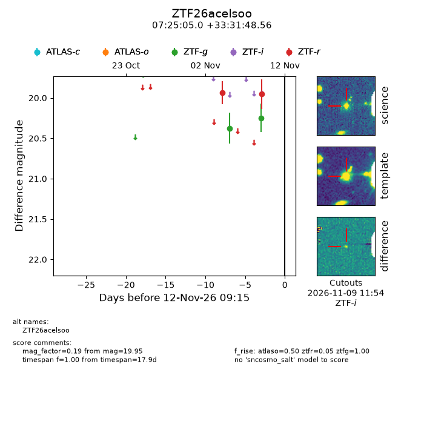
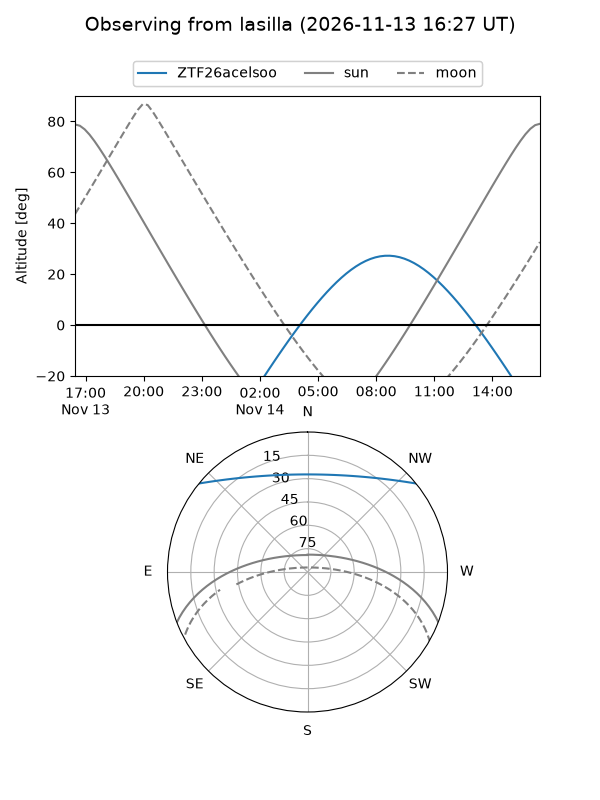
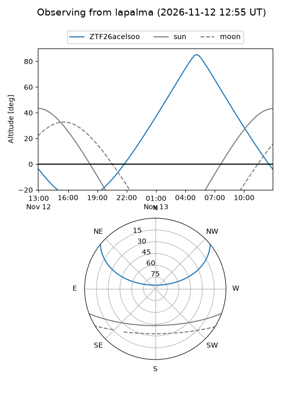
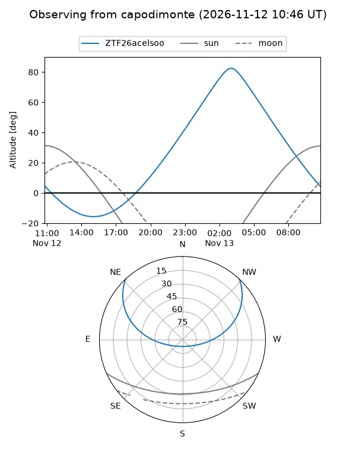
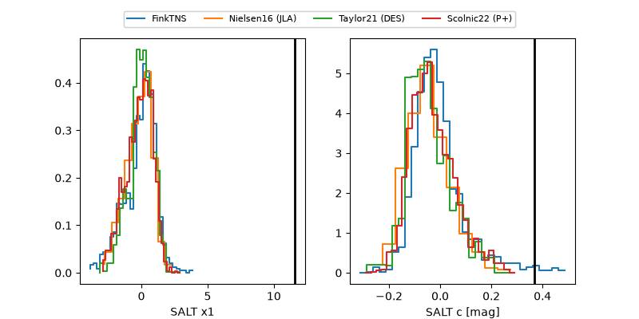

ZTF26acelsoo
Target ZTF26acelsoo at 2026-11-12 09:20
Aliases and brokers:
FINK-ZTF: ztf.fink-portal.org/ZTF26acelsoo
Lasair-ZTF: lasair-ztf.lsst.ac.uk/objects/ZTF26acelsoo
ALeRCE-ZTF: alerce.online/object/ZTF26acelsoo
Direct TNS query: direct search
alt names
ZTF26acelsoo (ztf,fink_ztf)
Coordinates:
equatorial (ra, dec) = 111.2707,+33.53015
equatorial (HMS+DMS) = 07:25:04.96,+33:31:48.56
galactic (l, b) = (185.0651,+21.12446)
Flags:
peak dt:
Photometry:
last atlaso=nan, ztfg=20.25, ztfr=19.95
1 atlaso, 2 ztfg, 2 ztfr detections
Lightcurve

Visibility



Additional plots
